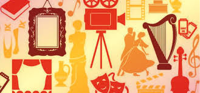
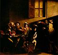
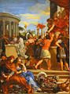
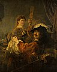
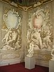
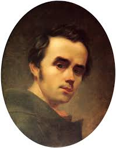
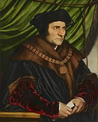

German
Епохи



| Античне мистецтво |
Середньовіччя |
| Барокко |
Відродження |
Художники
- Апеллес
- Сімоне Мартіне
- Мікеланджело
- Джентіло да Фабріано
- Леонардо да Вінчі
Історія мистецтва
Література
| Німецька література |
Англійська література |
| Французька література |
Українська література |
Розвиток літератури
Представники
- Данте Аліг'єрі
- Джованні Боккаччо
- Томас Мор
- Тарас Шевченко
- Іван Франко

